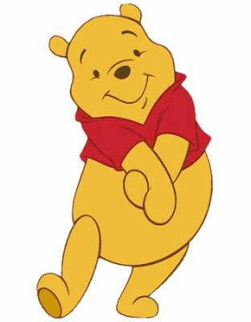

HTML шинж чанарууд нь HTML элементүүдийн талаар нэмэлт мэдээлэл өгдөг.
- Бүх HTML элементүүд нь шинж чанартай (attribute) байж болно.
- Атрибутууд нь элементүүдийн талаар нэмэлт мэдээлэл өгдөг.
- Шинж чанаруудыг үргэлж эхлэл таг дээр зааж өгдөг.
- Атрибутууд нь ихэвчлэн нэр/утга хосоор бичигддэг: name="value".
<a> таг нь гипер холбоосыг тодорхойлдог.
href - Аттрибут нь холбоосыг холбож буй хуудасны URL-г зааж өгдөг.
Visit Vox<img> таг HTML хуудсанд зураг оруулахад ашиглана.
Атрибут src зургийн замыг зааж өгнө.
URL хаягийг src атрибут дээр зааж өгөх 2 арга бий:
Absolute URL - Өөр вэб сайтад байршуулсан гаднах зургийн холбоос.
Жишээ: src="https://www.w3schools.com/images/img_girl.jpg"
Relative URL - Вэб сайт дотор байрлуулсан зургийн холбоос.
Хэрэв URL нь ташуу зураасгүйгээр эхэлбэл нэг хавтаст байгаа. Жишээ: src="img_girl.jpg".
Хэрэв URL нь налуу зураасаар эхэлсэн бол энэ нь домайнээс зураг татах болно. Жишээ: src="/images/img_girl.jpg".
<img> - tag зургийн өргөн (width), өндрийг (height) тодорхойлон, тэдгээрийг пикселээр зааж байх ёстой.
alt - шинж чанар нь <img> таг ямар нэг алдаатай байгаа зургийг харуулах боломжгүй үед текстийг зааж өгдөг.
Алдаа нь удаан холболт, src атрибутын алдаатай холбоотой байж болно.
"style" attribute нь өнгө, фонт, хэмжээ гэх мэт чанаруудыг нэмнэ.
Веб хуудасны хэлийг тохируулахын тулд <html> дотор lang attribute заавал оруулах ёстой.
Энэ нь хайлтын систем болон хөтчүүдэд туслах зорилготой юм.
Улсын кодыг мөн lang attribute дотор нэмж өгч болно.
<html lang="en-US"> - эхний хоёр тэмдэгт нь HTML хуудасны хэлийг, сүүлийн хоёр үсэг улсыг тодорхойлдог.
title - Атрибут нь элементийн талаархи нэмэлт мэдээллийг тодорхойлдог.
Текст дээр хулганаа хүргэхэд утгыг тайлбар болгон харуулах болно.
Аттрибутын утгуудын давхар хашилт HTML хэл дээр хамгийн түгээмэл байдаг.
Дан хашилтыг бас ашиглаж болно.